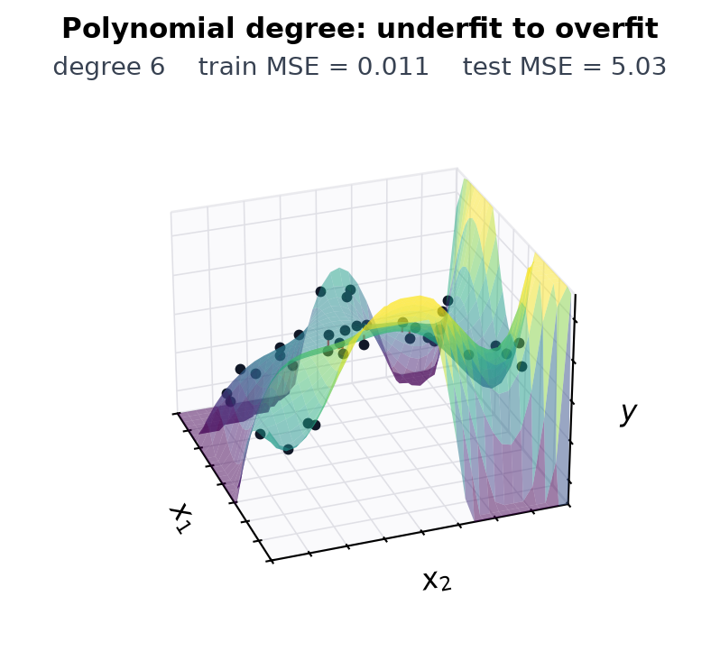
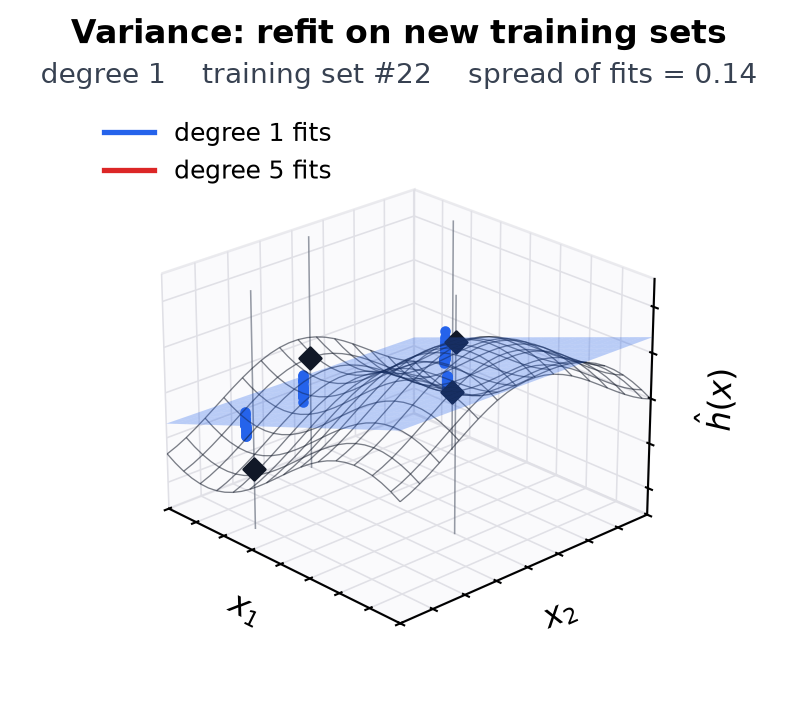
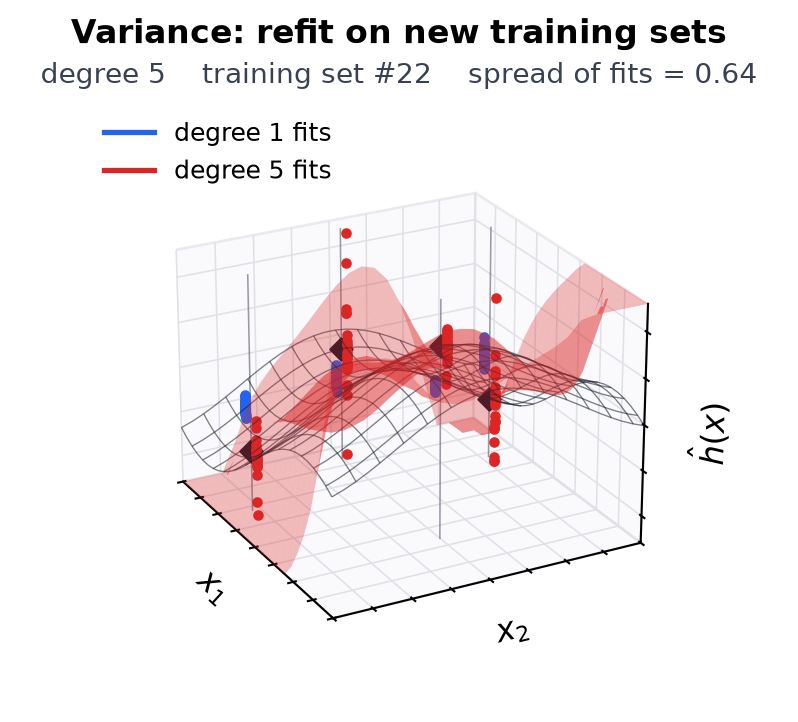
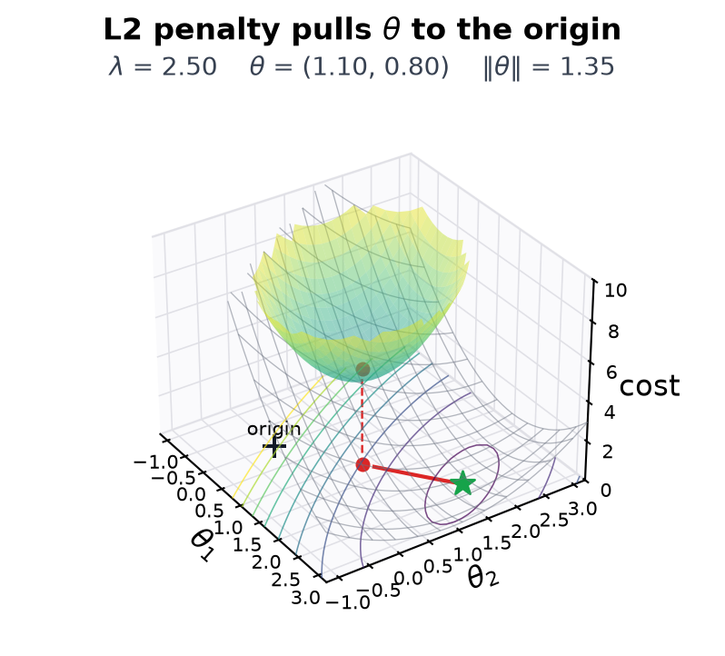
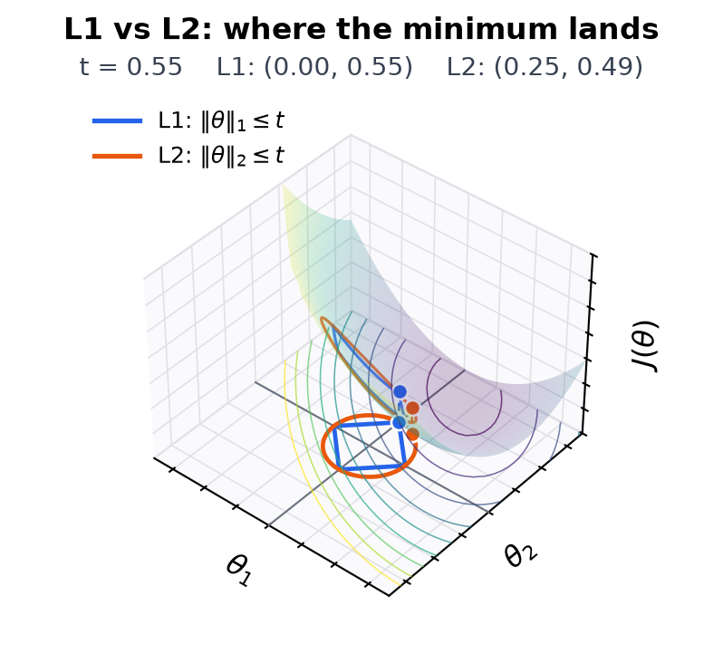

Bias-Variance Tradeoff, Regularization और Model Selection
Theory
इस lecture में: training error और generalization error का फ़र्क, underfitting (high bias) और overfitting (high variance), bias-variance decomposition और उसका derivation, Regularization (L2 यानी ridge, L1 यानी lasso), उसका Bayesian मतलब (Maximum Likelihood बनाम MAP), Model Selection (hold-out, k-fold और leave-one-out cross validation) और Feature Selection (wrapper और filter methods)।
1. एक line में idea
Model का असली इम्तिहान training data पर नहीं, नए data पर होता है। बहुत सरल model data का pattern पकड़ ही नहीं पाता (underfitting)। बहुत लचीला model pattern के साथ-साथ noise भी रट लेता है (overfitting)। अच्छा model इन दोनों के बीच में कहीं है। इस lecture के सारे औज़ार (regularization, cross validation, feature selection) उसी बीच की जगह को ढूँढने के तरीके हैं।
2. Training error बनाम generalization error
मान लीजिए हर example \((x, y)\) किसी distribution \(\mathcal{D}\) से आता है। किसी hypothesis \(h\) के लिए दो अलग errors होते हैं:
\[\hat{\varepsilon}(h) = \frac{1}{m}\sum_{i=1}^{m}\left(h(x^{(i)}) - y^{(i)}\right)^2, \qquad \varepsilon(h) = E_{(x,y)\sim\mathcal{D}}\left[\left(h(x) - y\right)^2\right]\]
- \(\hat{\varepsilon}(h)\) training error है: उन्हीं \(m\) examples पर औसत error जिनसे model सीखा है।
- \(\varepsilon(h)\) generalization error (या test error) है: \(\mathcal{D}\) से आए बिल्कुल नए example पर औसत error।
Training में हम \(\hat{\varepsilon}\) को छोटा करते हैं, पर हमें असल में \(\varepsilon\) छोटा चाहिए। \(\varepsilon(h) - \hat{\varepsilon}(h)\) को generalization gap कहते हैं। \(\varepsilon\) को हम सीधे नहीं नाप सकते, इसलिए उसका अंदाज़ा ऐसे data से लगाते हैं जिसे model ने training में कभी नहीं देखा (test set)।
3. Underfitting और Overfitting
एक feature वाला data लें और उस पर degree \(d\) का polynomial fit करें: \(h_\theta(x) = \theta_0 + \theta_1 x + \dots + \theta_d x^d\)। \(d\) बढ़ाने से model ज़्यादा लचीला (complex) होता जाता है।
| Degree \(d\) | क्या होता है | Training error | Generalization error | नाम |
|---|---|---|---|---|
| बहुत छोटा (जैसे 1) | सीधी line मुड़े हुए pattern को पकड़ नहीं पाती | बड़ा | बड़ा | underfitting, high bias |
| ठीक (जैसे 3) | pattern पकड़ता है, noise को छोड़ देता है | छोटा | छोटा | अच्छा fit |
| बहुत बड़ा (जैसे 10) | हर training point से गुज़रता है, बीच में झूलता है | लगभग 0 | बड़ा | overfitting, high variance |
याद रखने की बात: \(d\) बढ़ाने पर training error हमेशा घटता है (या उतना ही रहता है), पर generalization error पहले घटता है और फिर बढ़ने लगता है। इसलिए training error देखकर model नहीं चुना जा सकता।
4. Bias-Variance Decomposition
अब इसी बात को maths में लिखते हैं। मान लीजिए data ऐसे बनता है:
\[y = h^\star(x) + \xi, \qquad E[\xi] = 0, \quad \mathrm{Var}(\xi) = \sigma^2\]
यहाँ \(h^\star\) असली (अनजान) function है और \(\xi\) noise है। Training set \(S\) random है, इसलिए उस पर सीखा गया model \(\hat{h}_S\) भी random है: नया \(S\) लेंगे तो थोड़ा अलग \(\hat{h}_S\) मिलेगा। एक test point \(x\) तय करें और उस पर औसत squared error देखें (औसत \(S\) और test noise \(\xi\), दोनों पर):
\[\mathrm{MSE}(x) = E_{S,\xi}\left[\left(y - \hat{h}_S(x)\right)^2\right]\]
Step 1: noise को अलग करें। \(y - \hat{h}_S(x) = \xi + \left(h^\star(x) - \hat{h}_S(x)\right)\) लिखें और square खोलें। Test point का \(\xi\) training set \(S\) से independent है और \(E[\xi] = 0\) है, इसलिए cross term \(2\,E[\xi]\,E_S[h^\star(x) - \hat{h}_S(x)] = 0\) हो जाता है:
\[\mathrm{MSE}(x) = \underbrace{E[\xi^2]}_{\sigma^2} + E_S\left[\left(h^\star(x) - \hat{h}_S(x)\right)^2\right]\]
Step 2: औसत model को बीच में लाएँ। \(h_{\text{avg}}(x) = E_S[\hat{h}_S(x)]\) वह prediction है जो अनगिनत training sets पर सीखे गए models का औसत लेने से मिलता। अब \(h^\star(x) - \hat{h}_S(x) = \left(h^\star(x) - h_{\text{avg}}(x)\right) + \left(h_{\text{avg}}(x) - \hat{h}_S(x)\right)\) लिखें। पहला हिस्सा एक constant है (उसमें \(S\) नहीं है), और दूसरे हिस्से का mean zero है (क्योंकि \(E_S[\hat{h}_S(x)] = h_{\text{avg}}(x)\))। इसलिए यहाँ भी cross term zero है:
\[E_S\left[\left(h^\star(x) - \hat{h}_S(x)\right)^2\right] = \left(h^\star(x) - h_{\text{avg}}(x)\right)^2 + E_S\left[\left(\hat{h}_S(x) - h_{\text{avg}}(x)\right)^2\right]\]
दोनों steps जोड़ने पर:
\[E\left[\left(y - \hat{h}(x)\right)^2\right] = \underbrace{\sigma^2}_{\text{noise}} + \underbrace{\left(h^\star(x) - h_{\text{avg}}(x)\right)^2}_{\mathrm{Bias}(\hat{h}(x))^2} + \underbrace{E_S\left[\left(\hat{h}_S(x) - h_{\text{avg}}(x)\right)^2\right]}_{\mathrm{Var}(\hat{h}(x))}\]
- \(\sigma^2\) (irreducible error): data का अपना noise। कोई भी model, चाहे \(h^\star\) ही क्यों न हो, इससे नीचे नहीं जा सकता।
- Bias: औसत model असली function से कितना दूर है। यह model की बनावट की कमी है: अनंत data मिलने पर भी सीधी line किसी curve को fit नहीं कर सकती।
- Variance: training set बदलने पर prediction कितना हिलता है। यह बताता है कि model इस खास \(S\) के noise को कितना रट रहा है।
5. Complexity और data का असर
| आप क्या बदलते हैं | \(\mathrm{Bias}^2\) | Variance |
|---|---|---|
| Model ज़्यादा complex (degree बड़ी, features ज़्यादा) | घटता है | बढ़ता है |
| Model ज़्यादा सरल | बढ़ता है | घटता है |
| Training examples \(m\) ज़्यादा | लगभग वही रहता है | घटता है |
| Regularization \(\lambda\) बड़ा | बढ़ता है | घटता है |
यही bias-variance tradeoff है: complexity बढ़ाने से एक term घटता है और दूसरा बढ़ता है, इसलिए दोनों का जोड़ (test error) बीच की किसी complexity पर सबसे छोटा होता है। ध्यान दें कि ज़्यादा data सिर्फ़ variance को ठीक करता है, bias को नहीं।
Learning theory इन्हीं बातों को पक्का रूप देती है: वह दिखाती है कि \(m\) बढ़ने पर training error और generalization error के बीच का gap सिकुड़ता है, और hypothesis class जितनी बड़ी हो, उतना ही gap पाटने के लिए ज़्यादा data चाहिए। हम यहाँ वे bounds derive नहीं करेंगे।
6. Regularization
Complexity घटाने का एक तरीका है features हटाना। दूसरा, ज़्यादा महीन तरीका है सारे features रखना पर बड़े \(\theta\) पर जुर्माना (penalty) लगाना:
\[J_\lambda(\theta) = J(\theta) + \lambda R(\theta)\]
\(R(\theta)\) regularizer है और \(\lambda \ge 0\) regularization parameter है। \(\lambda = 0\) पर कोई रोक नहीं है (overfitting का खतरा)। \(\lambda\) बहुत बड़ा हो तो \(\theta \to 0\) और model underfit करता है।
L2 regularization (ridge)
यहाँ \(R(\theta) = \frac{1}{2}\|\theta\|_2^2 = \frac{1}{2}\sum_j \theta_j^2\) है। Lecture 2 का \(J(\theta) = \frac{1}{2}(X\theta - \vec{y})^T(X\theta - \vec{y})\) लें:
\[J_\lambda(\theta) = \frac{1}{2}(X\theta - \vec{y})^T(X\theta - \vec{y}) + \frac{\lambda}{2}\theta^T\theta, \qquad \nabla_\theta J_\lambda(\theta) = X^TX\theta - X^T\vec{y} + \lambda\theta\]
Gradient को zero रखने पर \((X^TX + \lambda I)\theta = X^T\vec{y}\), यानी
\[\theta = (X^TX + \lambda I)^{-1}X^T\vec{y}\]
दो बातें ध्यान देने की हैं। पहली: किसी भी \(v \neq 0\) के लिए \(v^T(X^TX + \lambda I)v = \|Xv\|^2 + \lambda\|v\|^2 > 0\) है, इसलिए \(\lambda > 0\) पर यह matrix हमेशा invertible है, चाहे \(m < n\) हो। दूसरी: कई किताबें penalty को \(\lambda\|\theta\|_2^2\) लिखती हैं (\(\frac{1}{2}\) के बिना)। उससे सिर्फ़ \(\lambda\) का पैमाना 2 गुना बदलता है, idea वही रहता है। Gradient Descent में L2 penalty का update \(\theta := (1 - \alpha\lambda)\theta - \alpha\nabla_\theta J(\theta)\) बनता है: हर step में \(\theta\) पहले थोड़ा सिकुड़ता है। इसीलिए इसे weight decay भी कहते हैं।
L1 regularization (lasso) और sparsity
यहाँ \(R(\theta) = \|\theta\|_1 = \sum_j |\theta_j|\) है। L1 की खासियत यह है कि वह कई \(\theta_j\) को ठीक zero कर देता है (sparse solution), यानी अपने आप feature selection हो जाता है। ऐसा क्यों होता है, यह एक parameter वाले उदाहरण से दिखता है। मान लीजिए penalty के बिना सबसे अच्छा मान \(a\) है:
\[\begin{aligned} \text{L2:}\quad & \min_\theta \tfrac{1}{2}(\theta - a)^2 + \tfrac{\lambda}{2}\theta^2 &&\Longrightarrow\quad \theta = \frac{a}{1 + \lambda} \\ \text{L1:}\quad & \min_\theta \tfrac{1}{2}(\theta - a)^2 + \lambda|\theta| &&\Longrightarrow\quad \theta = \mathrm{sign}(a)\,\max(|a| - \lambda,\ 0) \end{aligned}\]
L1 वाला जवाब ऐसे निकलता है: \(\theta > 0\) पर derivative \(\theta - a + \lambda = 0\) से \(\theta = a - \lambda\) मिलता है, जो तभी valid है जब \(a > \lambda\) हो। इसी तरह \(\theta < 0\) पर \(\theta = a + \lambda\), जो तभी valid है जब \(a < -\lambda\) हो। अगर \(|a| \le \lambda\) है तो दोनों में से कोई valid नहीं, और minimum नोक \(\theta = 0\) पर ही है। यानी L2 हर \(\theta_j\) को एक अनुपात में छोटा करता है पर zero कभी नहीं करता, जबकि L1 हर \(\theta_j\) में से \(\lambda\) घटा देता है और छोटे वालों को पूरा zero कर देता है।
Geometric मतलब: penalty लगाना वैसा ही है जैसे \(J(\theta)\) को एक budget \(R(\theta) \le t\) के अंदर minimize करना। L2 का budget region एक गोल घेरा (circle) है, L1 का एक diamond जिसके कोने axes पर हैं। \(J\) के contours diamond को अक्सर किसी कोने पर ही सबसे पहले छूते हैं, और कोने पर कोई न कोई \(\theta_j = 0\) होता है। L1 का closed form नहीं होता, उसे iterative तरीकों से solve करते हैं।
7. Bayesian नज़रिया: Maximum Likelihood बनाम MAP
अब तक (frequentist नज़रिया) \(\theta\) एक अनजान पर तय संख्या थी, और हम उसे Maximum Likelihood से निकालते थे:
\[\theta_{\text{MLE}} = \arg\max_\theta \prod_{i=1}^{m} p(y^{(i)} \mid x^{(i)}; \theta)\]
Bayesian नज़रिए में \(\theta\) खुद एक random variable है। Data देखने से पहले उसके बारे में हमारी मान्यता prior \(p(\theta)\) है। Data \(S\) देखने के बाद Bayes rule से posterior मिलता है: \(p(\theta \mid S) \propto \left(\prod_{i=1}^{m} p(y^{(i)} \mid x^{(i)}, \theta)\right) p(\theta)\)। पूरा Bayesian prediction posterior पर integral माँगता है, जो आम तौर पर बहुत महँगा है। इसलिए posterior का सबसे ऊँचा बिंदु ले लेते हैं, जिसे MAP (maximum a posteriori) estimate कहते हैं:
\[\theta_{\text{MAP}} = \arg\max_\theta \left(\prod_{i=1}^{m} p(y^{(i)} \mid x^{(i)}, \theta)\right) p(\theta)\]
फ़र्क बस आख़िर के \(p(\theta)\) का है। अब Linear Regression का Gaussian noise model (\(y^{(i)} = \theta^Tx^{(i)} + \epsilon^{(i)}\), \(\epsilon^{(i)} \sim \mathcal{N}(0, \sigma^2)\)) और prior \(\theta \sim \mathcal{N}(0, \tau^2 I)\) लें। Log लेने पर:
\[\log\left[\prod_{i=1}^{m} p(y^{(i)} \mid x^{(i)}, \theta)\; p(\theta)\right] = -\frac{1}{2\sigma^2}\sum_{i=1}^{m}\left(y^{(i)} - \theta^Tx^{(i)}\right)^2 - \frac{1}{2\tau^2}\|\theta\|_2^2 + \text{const}\]
इसे maximize करना, \(-\sigma^2\) से गुणा करने के बाद, इसे minimize करने के बराबर है:
\[\theta_{\text{MAP}} = \arg\min_\theta\ \frac{1}{2}\sum_{i=1}^{m}\left(y^{(i)} - \theta^Tx^{(i)}\right)^2 + \frac{\lambda}{2}\|\theta\|_2^2, \qquad \lambda = \frac{\sigma^2}{\tau^2}\]
यह ठीक ridge regression है। यानी L2 regularization = Gaussian prior के साथ MAP। \(\tau\) छोटा होने का मतलब है "मुझे पक्का लगता है कि \(\theta\) zero के पास है", और तब \(\lambda\) बड़ा होता है। इसी तरह Laplace prior \(p(\theta_j) \propto \exp(-|\theta_j|/b)\) लेने पर L1 regularization मिलता है।
8. Model Selection: Cross Validation
Degree \(d\), \(\lambda\), या features का set कैसे चुनें? Training error से नहीं (वह हमेशा सबसे complex model को जिताएगा)। तरीका यह है कि कुछ data अलग रखें और उस पर error नापें।
Hold-out cross validation:
- \(S\) को random तरीके से दो हिस्सों में बाँटें: \(S_{\text{train}}\) (लगभग 70%) और \(S_{\text{cv}}\) (लगभग 30%)।
- हर candidate model \(M_i\) को सिर्फ़ \(S_{\text{train}}\) पर train करें और hypothesis \(h_i\) पाएँ।
- हर \(h_i\) का error \(S_{\text{cv}}\) पर नापें और सबसे छोटे error वाला model चुनें।
- चाहें तो चुने हुए model को पूरे \(S\) पर दोबारा train कर लें।
k-fold cross validation: hold-out में 30% data training के काम नहीं आता। इसे सुधारने के लिए:
- \(S\) को \(k\) बराबर हिस्सों \(S_1, \dots, S_k\) में बाँटें।
- हर model \(M_i\) के लिए, \(j = 1, \dots, k\) पर: \(S_j\) को छोड़कर बाकी सब पर train करें और \(S_j\) पर error नापें। इन \(k\) errors का औसत उस model का score है।
- सबसे छोटे औसत error वाला model चुनें और उसे पूरे \(S\) पर दोबारा train करें।
Leave-one-out cross validation (LOOCV): यह \(k = m\) वाला k-fold है। हर बार सिर्फ़ एक example बाहर रखते हैं और \(m\) बार train करते हैं।
| तरीका | हर model के लिए training runs | कब use करें |
|---|---|---|
| Hold-out | 1 | data बहुत है, या training बहुत महँगी है |
| k-fold (\(k = 5\) या \(10\)) | \(k\) | बीच का data, यही आम पसंद है |
| Leave-one-out | \(m\) | data बहुत कम है (जैसे \(m \le 50\)) |
9. Feature Selection
अगर \(n\) बहुत बड़ा है और \(m\) छोटा, तो कुछ ही features रखना variance घटाता है। \(n\) features के \(2^n\) subsets होते हैं, इसलिए सबको आज़माना मुमकिन नहीं।
Wrapper methods learning algorithm को ही बार-बार चलाकर subsets परखते हैं। Forward search:
- \(\mathcal{F} = \emptyset\) से शुरू करें।
- हर ऐसे feature \(i\) के लिए जो \(\mathcal{F}\) में नहीं है, \(\mathcal{F} \cup \{i\}\) पर model train करें और cross validation से उसका error नापें। जो feature सबसे ज़्यादा फ़ायदा दे, उसे \(\mathcal{F}\) में जोड़ दें।
- Step 2 दोहराएँ, जब तक सारे features न आ जाएँ या तय संख्या पूरी न हो जाए। पूरे search में जो subset सबसे अच्छा रहा, वही जवाब है।
Backward search उल्टा चलता है: सारे features से शुरू करें और हर बार वह feature हटाएँ जिसके जाने से सबसे कम नुकसान हो। दोनों में लगभग \(O(n^2)\) training runs लगते हैं, जो महँगा है।
Filter methods model train किए बिना हर feature को एक score \(S(j)\) देते हैं कि \(x_j\) अकेला \(y\) के बारे में कितना बताता है, और ऊपर के \(k\) features रख लेते हैं। Score के लिए \(x_j\) और \(y\) का correlation ले सकते हैं, या (discrete features के लिए) mutual information:
\[\mathrm{MI}(x_j, y) = \sum_{x_j}\sum_{y} p(x_j, y)\,\log\frac{p(x_j, y)}{p(x_j)\,p(y)}\]
ये probabilities training set की गिनती से निकलती हैं। अगर \(x_j\) और \(y\) independent हैं तो \(p(x_j, y) = p(x_j)p(y)\) और score zero है। जितना ज़्यादा score, feature उतना काम का। कितने features रखें (\(k\)), यह फिर cross validation से तय करें। Filter methods सस्ते हैं, पर वे features को अकेले-अकेले देखते हैं और उनका आपसी मेल नहीं पकड़ते।
10. Practical बातें और आम गलतियाँ
- Test set को model चुनने में कभी न लगाएँ। \(\lambda\) या degree cross validation से चुनें, और test set सिर्फ़ आख़िर में एक बार देखें। नहीं तो test error भी झूठा अच्छा दिखेगा।
- हर preprocessing fold के अंदर करें। Feature scaling या feature selection पूरे data पर करके फिर cross validation करना data leakage है। Statistics सिर्फ़ उस fold के training हिस्से से निकालें।
- Intercept \(\theta_0\) को regularize न करें, और regularization से पहले features को scale करें। Penalty \(\theta_j\) के size पर लगती है, और वह size feature की unit पर निर्भर करता है।
- \(\lambda\) को log scale पर खोजें: \(0.001, 0.01, 0.1, 1, 10\)। बराबर दूरी वाले मान समय बर्बाद करते हैं।
- पहले पहचानें, फिर इलाज करें। High bias हो तो ज़्यादा data जुटाने से कुछ नहीं होगा; बड़ा model या नए features चाहिए। High variance हो तो ज़्यादा data, बड़ा \(\lambda\) या कम features काम आएँगे (Lecture 12)।
11. खुद से पूछें
- Bias-variance derivation के Step 1 में cross term zero क्यों हुआ? अगर test point खुद training set का हिस्सा होता, तो क्या यह तर्क चलता?
- Ridge के closed form में \(\lambda \to \infty\) करने पर \(\theta\) का क्या होता है, और तब bias और variance का क्या होता है?
- आपके पास \(m = 40\) examples और \(n = 500\) features हैं। आप कौन सा cross validation और कौन सा feature selection तरीका चुनेंगे, और क्यों?
3D Animations



क्या देखें: काले बिंदु noisy training data हैं: दो features \(x_1, x_2\) और ऊँचाई पर target \(y\)। रंगीन surface उन पर fit किया गया polynomial है, जिसकी degree 1 से 6 तक चढ़ती है। Degree 1 का सपाट plane मोड़ों को पकड़ नहीं पाता (underfitting), इसलिए लाल residuals लंबे हैं। Degree 3 के आस-पास surface असली आकार पकड़ लेती है। Degree 6 पर surface हर बिंदु से गुज़रने के लिए बुरी तरह मुड़ती है (overfitting): status line में training error लगभग zero हो जाता है पर test error उछल जाता है।



क्या देखें: स्लेटी जाली असली function \(h^\star\) है। हर frame में उसी distribution से एक नया training set लिया जाता है और model दोबारा fit होता है। पहले आधे हिस्से में model सरल है (degree 1, नीला): surface लगभग नहीं हिलती, पर जाली से दूर रहती है (high bias, low variance)। दूसरे आधे में model complex है (degree 5, लाल): surface हर बार बुरी तरह बदलती है (high variance)। चार खंभों पर जमा होते बिंदु हर fit का prediction हैं और काला निशान सच है: नीले बिंदु सटे हुए पर सच से हटे हुए हैं, लाल बिंदु सच के आस-पास दूर-दूर बिखरे हैं।



क्या देखें: ज़मीन पर दो parameters \(\theta_1, \theta_2\) हैं और ऊँचाई cost है। स्लेटी जाली बिना regularization का \(J(\theta)\) है, जिसका minimum हरे तारे पर है। रंगीन surface regularized cost \(J(\theta) + \frac{\lambda}{2}\|\theta\|_2^2\) है। जैसे-जैसे \(\lambda\) बढ़ता है, origin पर टिका penalty का कटोरा surface को हर तरफ़ से ऊपर उठाता है, बस origin पर नहीं। इसलिए minimum (लाल गेंद) हरे तारे से खिंचकर origin की ओर सरकता जाता है: \(\|\theta\|\) छोटा होता है, पर कभी ठीक zero नहीं होता।



क्या देखें: यहाँ भी ऊँचाई cost \(J(\theta)\) है, पर अब \(\theta\) को एक budget के अंदर रहना है। फ़र्श पर नीला diamond L1 budget \(\|\theta\|_1 \le t\) है और नारंगी गोल घेरा L2 budget \(\|\theta\|_2 \le t\) है। दोनों की सीमा को surface पर उठाकर भी खींचा गया है: budget के अंदर सबसे नीचा बिंदु ही constrained minimum है। जैसे-जैसे \(t\) घटता है, L1 का बिंदु diamond के किनारे पर फिसलकर कोने पर पहुँचता है और वहीं अटक जाता है, यानी \(\theta_1\) ठीक zero (sparsity)। L2 का बिंदु घेरे पर सरकता रहता है और उसके दोनों coordinates non-zero रहते हैं।


क्या देखें: ज़मीन पर दो hyperparameters हैं: polynomial की degree और \(\log_{10}\lambda\)। नीली surface training error है और नारंगी surface validation error (कई random training sets पर नापा गया)। पहले marker सबसे छोटे \(\lambda\) पर degree बढ़ाता है: नीला बिंदु लगातार नीचे जाता है, पर लाल बिंदु पहले गिरता है और फिर ऊपर चढ़ जाता है (overfitting)। दोनों के बीच की खड़ी रेखा generalization gap है। फिर marker \(\lambda\) बढ़ाता है और validation error दोबारा गिरता है। अंत में वह validation surface के सबसे निचले बिंदु (हरा तारा) पर रुकता है: model वहीं चुना जाता है, वहाँ नहीं जहाँ training error सबसे कम है।
Python Example
इसे खुद चलाएँ: dhruv_ai_tutorial/.venv/bin/python dhruv_ai_tutorial/chapters/L08_bias_variance_regularization/example.py
"""Lecture 8 example: Ridge Regression, k-fold Cross Validation और Bias-Variance (सिर्फ़ NumPy). 1D data पर polynomial regression करते हैं। पहले k-fold cross validation से degree और lambda चुनते हैं। फिर सैकड़ों training sets बनाकर bias^2 और variance को सीधे नापते हैं और देखते हैं कि sigma^2 + bias^2 + variance सचमुच test error के बराबर आता है। """ import numpy as np import matplotlib.pyplot as plt SIGMA = 0.3 # noise का standard deviation def h_star(x): """असली function, जो model को पता नहीं है।""" return np.sin(2.5 * x) + 0.7 * np.cos(3.5 * x) def make_data(m, rng): x = rng.uniform(-1, 1, m) return x, h_star(x) + rng.normal(0, SIGMA, m) # ---------- 1. Polynomial features और ridge का closed form ---------- def poly_features(x, degree): """Columns: 1, x, x^2, ..., x^degree""" return np.vander(x, degree + 1, increasing=True) def ridge_fit(x, y, degree, lam): """theta = (X^T X + lam*I)^-1 X^T y, पर intercept theta_0 पर penalty नहीं।""" X = poly_features(x, degree) penalty = lam * np.eye(degree + 1) penalty[0, 0] = 0.0 return np.linalg.solve(X.T @ X + penalty, X.T @ y) def predict(theta, x): return poly_features(x, len(theta) - 1) @ theta def mse(theta, x, y): return np.mean((predict(theta, x) - y) ** 2) # ---------- 2. k-fold cross validation ---------- def kfold_error(x, y, degree, lam, k=5): """हर fold को एक बार बाहर रखें, बाकी पर train करें, बाहर वाले पर error नापें।""" folds = np.array_split(np.arange(len(x)), k) # data पहले से random क्रम में है errors = [] for held_out in folds: train = np.setdiff1d(np.arange(len(x)), held_out) theta = ridge_fit(x[train], y[train], degree, lam) errors.append(mse(theta, x[held_out], y[held_out])) return np.mean(errors) rng = np.random.default_rng(8) x_train, y_train = make_data(40, rng) x_test, y_test = make_data(2000, rng) # सिर्फ़ आख़िरी जाँच के लिए degrees = [1, 2, 3, 4, 5, 7, 9, 12] lambdas = [0.0, 1e-4, 1e-2, 1.0] cv = np.array([[kfold_error(x_train, y_train, d, lam) for lam in lambdas] for d in degrees]) print("1) 5-fold CV error (m = 40). Rows: degree, columns: lambda") print("degree " + "".join(f"{f'lam={lam:g}':>12}" for lam in lambdas) + " train MSE (lam=0)") for d, row in zip(degrees, cv): train_err = mse(ridge_fit(x_train, y_train, d, 0.0), x_train, y_train) print(f"{d:>6} " + "".join(f"{e:12.4f}" for e in row) + f" {train_err:10.4f}") best_d, best_l = np.unravel_index(np.argmin(cv), cv.shape) d_cv, lam_cv = degrees[best_d], lambdas[best_l] theta_cv = ridge_fit(x_train, y_train, d_cv, lam_cv) # चुने हुए model को पूरे data पर train करें print(f"\nCV ने चुना: degree = {d_cv}, lambda = {lam_cv:g} (CV error {cv.min():.4f})") print("Test MSE (2000 नए examples पर):") for label, d, lam in [("CV का चुना हुआ model", d_cv, lam_cv), ("degree 1 (underfit)", 1, 0.0), ("degree 12, lam=0 (overfit)", 12, 0.0), ("degree 12, lam=0.01", 12, 1e-2)]: print(f" {mse(ridge_fit(x_train, y_train, d, lam), x_test, y_test):.4f} {label}") print(f"(noise का sigma^2 = {SIGMA**2:.4f}: इससे नीचे कोई model नहीं जा सकता)") # ---------- 3. Bias-variance simulation: बहुत सारे training sets, हर एक पर नया model ---------- # हर training set में x की वही m जगहें हैं (बराबर दूरी पर) और y का noise नया है, जैसे वही # experiment बार-बार दोहराया गया हो। इससे सिर्फ़ noise से पैदा हुआ variance साफ़ दिखता है। x_grid = np.linspace(-1, 1, 200) # test points def bias_variance(degree, lam, m=15, trials=1000, seed=0): sim = np.random.default_rng(seed) x = np.linspace(-1, 1, m) preds = np.empty((trials, len(x_grid))) test_err = 0.0 for t in range(trials): y = h_star(x) + sim.normal(0, SIGMA, m) # नया training set preds[t] = predict(ridge_fit(x, y, degree, lam), x_grid) y_new = h_star(x_grid) + sim.normal(0, SIGMA, len(x_grid)) # नए noisy test targets test_err += np.mean((y_new - preds[t]) ** 2) / trials h_avg = preds.mean(axis=0) # औसत model variance = np.mean(preds.var(axis=0)) # trials सीमित हैं, इसलिए h_avg में थोड़ा noise बचता है (लगभग variance / trials): उसे घटा दें bias2 = max(0.0, np.mean((h_avg - h_star(x_grid)) ** 2) - variance / trials) return bias2, variance, test_err print("\n2) Bias-variance tradeoff (m = 15, 1000 training sets, lambda = 0)") print("degree bias^2 variance sigma^2+bias^2+var measured test MSE") sim_degrees = [1, 2, 3, 4, 6, 8, 10] table = [] for d in sim_degrees: b2, var, err = bias_variance(d, 0.0) table.append((b2, var, err)) print(f"{d:>6} {b2:9.4f} {var:10.4f} {SIGMA**2 + b2 + var:20.4f} {err:19.4f}") print("\n3) Degree 10 पर lambda और m का असर") print("setting bias^2 variance") for label, lam, m in [("lam=0, m=15", 0.0, 15), ("lam=0.01, m=15", 1e-2, 15), ("lam=1, m=15", 1.0, 15), ("lam=0, m=150", 0.0, 150)]: b2, var, _ = bias_variance(10, lam, m=m) print(f"{label:<20} {b2:9.4f} {var:10.4f}") # ---------- 4. Plots ---------- fig, axes = plt.subplots(1, 3, figsize=(13, 3.9)) axes[0].scatter(x_train, y_train, s=14, color="black", label="training data") axes[0].plot(x_grid, h_star(x_grid), "k--", lw=1, label="true function") for d, lam, col in [(1, 0.0, "tab:blue"), (d_cv, lam_cv, "tab:green"), (12, 0.0, "tab:red")]: axes[0].plot(x_grid, predict(ridge_fit(x_train, y_train, d, lam), x_grid), color=col, label=f"degree {d}, lambda={lam:g}") axes[0].set(ylim=(-2.2, 2.2), xlabel="x", ylabel="y", title="Underfit, chosen by CV, overfit") axes[0].legend(fontsize=7) for j, lam in enumerate(lambdas): axes[1].plot(degrees, cv[:, j], "o-", ms=3, label=f"lambda={lam:g}") axes[1].set(yscale="log", xlabel="degree", ylabel="5-fold CV error", title="Model selection") axes[1].legend(fontsize=7) b2s, variances, errs = np.array(table).T axes[2].plot(sim_degrees, b2s, "o-", label="bias^2") axes[2].plot(sim_degrees, variances, "o-", label="variance") axes[2].plot(sim_degrees, errs, "k^-", label="test MSE") axes[2].axhline(SIGMA**2, color="gray", ls=":", label="sigma^2 (noise)") axes[2].set(xlabel="degree", title="Bias-variance tradeoff") axes[2].legend(fontsize=7) fig.tight_layout() fig.savefig("result.png", dpi=130)
1) 5-fold CV error (m = 40). Rows: degree, columns: lambda
degree lam=0 lam=0.0001 lam=0.01 lam=1 train MSE (lam=0)
1 0.6644 0.6644 0.6641 0.6449 0.5149
2 0.3549 0.3549 0.3544 0.3611 0.2513
3 0.2378 0.2377 0.2336 0.3385 0.1291
4 0.1028 0.1028 0.1096 0.3606 0.0702
5 0.1201 0.1203 0.1354 0.3282 0.0699
7 0.2137 0.1836 0.1253 0.3209 0.0672
9 0.6869 0.2359 0.1290 0.3133 0.0660
12 330.5123 1.2816 0.1567 0.3047 0.0501
CV ने चुना: degree = 4, lambda = 0 (CV error 0.1028)
Test MSE (2000 नए examples पर):
0.1251 CV का चुना हुआ model
0.4352 degree 1 (underfit)
0.2234 degree 12, lam=0 (overfit)
0.1299 degree 12, lam=0.01
(noise का sigma^2 = 0.0900: इससे नीचे कोई model नहीं जा सकता)
2) Bias-variance tradeoff (m = 15, 1000 training sets, lambda = 0)
degree bias^2 variance sigma^2+bias^2+var measured test MSE
1 0.3475 0.0113 0.4487 0.4493
2 0.1233 0.0158 0.2291 0.2293
3 0.0411 0.0203 0.1514 0.1511
4 0.0015 0.0254 0.1169 0.1169
6 0.0000 0.0367 0.1267 0.1267
8 0.0000 0.0514 0.1414 0.1413
10 0.0000 0.0854 0.1754 0.1756
3) Degree 10 पर lambda और m का असर
setting bias^2 variance
lam=0, m=15 0.0000 0.0854
lam=0.01, m=15 0.0038 0.0302
lam=1, m=15 0.1530 0.0142
lam=0, m=150 0.0000 0.0065